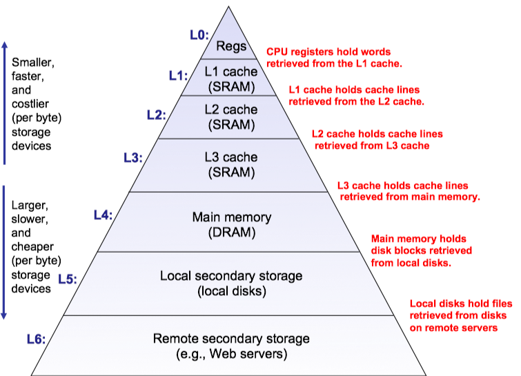
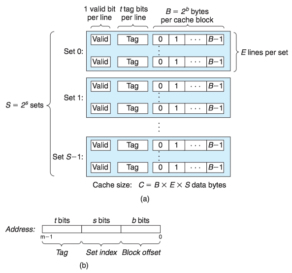

Chapter 6 存储器层次结构¶
存储器系统(memory system)是一个具有不同 容量 、 成本 和 访问时间 的存储设备的层次结构。
局部性(locality)：具有良好局部性的程序倾向于一次又一次地访问相同的数据项集合，或是倾向于访问邻近的数据项集合。
1 存储技术¶
RAM¶
随机访问存储器(Random-Access Memory, RAM)分为两类：静态(SRAM)和动态(DRAM)的。SRAM比DRAM更快，但也贵得多。
磁盘¶
磁盘是由盘片(platter)构成的。每个盘片如同切西瓜一样被“切”成一块一块的扇面，同时沿着半径的方向被划分成了一组同心圆(磁道, track)，每条磁道被扇面切成很多的扇形区域叫做扇区（sector, 扇区是从磁盘读出和写入信息的最小单位，包含相等数量的数据位，通常为512字节），不同盘片上的同半径磁道组成了柱面。

磁盘的容量： 磁头数 × 磁道数 × 每道扇区数 × 每扇区字节数
2 局部性¶
一个编写良好的计算机程序常常具有良好的局部性(locality)。也就是，它们倾向于引用邻近于其他最近引用过的数据项的数据项(空间局部性)，或者最近引用过的数据项本身(时间局部性)。
现代计算机系统的各个层次，从硬件到操作系统、再到应用程序，它们的设计都利用了局部性。
3 存储器层次结构 Memory Hierarchy¶
一般而言，从高层往低层走，存储设备变得更慢、更便宜和更大。
- 在最高层(L0)，是少量快速的CPU寄存器，CPU可以在一个时钟周期内访问它们。
- 接下来是一个或多个小型到中型的基于SRAM的高速缓存存储器，可以在几个CPU时钟周期内访问它们。
- 然后是一个大的基于DRAM的贮存，可以在几十到几百个时钟周期内访问它们。
- 接下来是慢速但容量很大的本地磁盘。
- 最后，有些系统包括了远程服务器上的磁盘，要通过网络来访问它们。

存储器层次结构中的缓存¶
存储器层次结构的中心思想是，对于每个k，位于k层的更快更小的存储设备作为位于k+1层的更大更慢的存储设备的缓存。换句话说，层次结构中的每一层都缓存来自较低一层的数据对象。
- 第k+1层的存储器被划分为连续的数据对象组块(chunk)，称为块(block)。
- 每个块都有一个唯一的地址。
- 块的大小可以是固定的(通常)，也可以是可变的(例如存储在Web服务器上的HMTL文件).
- 数据总是以块大小为传送单元在第k层和第k+1层之间来回复制。在层次结构中任何一对相邻的层次之间块大小是固定的(第k层和第k+1层块大小一致)，但是其他的层次对之间可以有不同的块大小。

当程序需要第k+1层的某个数据对象d时，它首先在当前存储在第k层的一个块中查找d。如果d刚好缓存在第k层中，即缓存命中(cache hit)，否则缓存不命中(cache miss)。
现代系统中到处都使用了缓存。

4 高速缓存存储器¶
通用的高速缓存存储器组织结构¶
考虑一个计算机系统，其中每个存储器地址有m位，形成M=2^m 个不同的地址。这样一个机器的高速缓存被组织成一个有S=2^s 个高速缓存组(cache set)的数组。
- 每个组包含E个高速缓存行(cache line)。
- 每个行是由一个B=2^b 字节的数据块(block)组成的。
- 一个有效位(valid bit)指明这个行是否包含有意义的信息。
- 有t=m-(b+s)个标记位(tag bit)唯一地标识存储在这个高速缓存行中的块。

高速缓存的大小C是指所有块的大小的和，C=S\times E\times B.
- 每个组只有一行(E=1)的高速缓存称为直接映射高速缓存；
- 每个组有多行(E>1)的高速缓存称为组相联高速缓存；
- 一个包含所有高速缓存行的组(E=C/B)，称为全相联高速缓存。
直接映射高速缓存¶

组相联高速缓存¶
组相联高速缓存(set associative cache)的每个组都保存有多于一个的高速缓存行。一个1<E<C/B的高速缓存通常称为E路组相联高速缓存(E-way set associative cache)。

相联存储器是一个(key, value)对的数组，以key为输入，返回与输入的key相匹配的(key, value）对中的value值。我们可以把相联高速缓存的每个组看成一个小的相联存储器，key是标记和有效位，而value就是块的内容。
全相联高速缓存¶
一个包含所有高速缓存行的组(E=C/B)，称为全相联高速缓存。 因为高速缓存电路必须并行地搜索许多相匹配的标记，构造一个又大又快的全相联高速缓存很困难，并且很昂贵。因此，全相联高速缓存只适合做小的高速缓存(例如MMC中的TLB)。
5 编写高速缓存友好的代码¶
6 高速缓存对程序性能的影响¶
存储器山